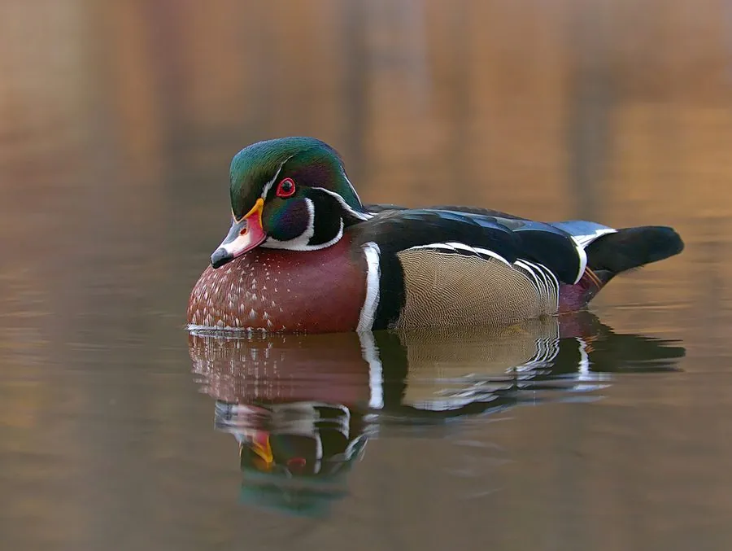

鸟类 · 动物界
林鸳鸯 Aix sponsa

北美林间湿地的彩色鸭类，雄鸟羽色如彩绘，雌鸟灰褐带白色泪斑，喜欢在树洞中筑巢，雏鸭出壳后从高处跃入水中。
- 分类
- 门脊索动物门纲鸟纲目雁形目科鸭科属鸳鸯属
- 栖息环境
- 北美洲东部的森林沼泽、池塘、缓流河湾与湿地，需成熟林木提供树洞
- 地理分布
- 北美洲东部至中部，包括加拿大南部、美国东部和墨西哥北部
- 保护级别
- IUCN 无危（LC）
物种志
林鸳鸯体长 41–54 cm，体重 450–700 g。雄鸟繁殖羽极为华丽：头部墨绿并带紫色光泽，有白色线条勾边，眼睛红色，胸部栗红并点缀白斑，体侧淡黄，背部深绿，喙红白黑相间。雌鸟通体灰褐色，眼周有一圈白色泪滴状斑纹，羽毛边缘浅色，形成细致的鳞状纹。
它们分布在北美洲东部的森林沼泽、池塘与缓流河湾，从加拿大南部、美国东部一直延伸到墨西哥北部，冬季部分个体南迁。林鸳鸯依赖成熟林木提供的树洞筑巢，巢位可离地十余米，也会使用人工巢箱。每窝产卵 7–15 枚，雌鸟孵化约 28–37 天；雏鸭出壳次日便从树洞跳下，靠体重轻、绒羽蓬松而安然落地，随后随母鸭下水。食物包括水生植物、种子、橡实、昆虫与螺类。
形态与习性
- 食性水生植物、种子、橡实、昆虫和螺类
- 体长41–54 cm
- 体重450–700 g
- 繁殖每窝 7–15 枚，孵化 28–37 天
- 寿命约 10–15 年
- 巢址树洞或人工巢箱，巢位可离地十余米
趣味知识
- 雏鸭出壳第二天就会从十几米高的树洞跳下，落地后跟着母鸭走向水面。
- 雄鸟在繁殖期结束后换上暗淡的蚀羽，外形一度与雌鸟相似。
- 林鸳鸯的英文名 Wood Duck 意为“树林鸭”，它确实常在林间水面上活动。